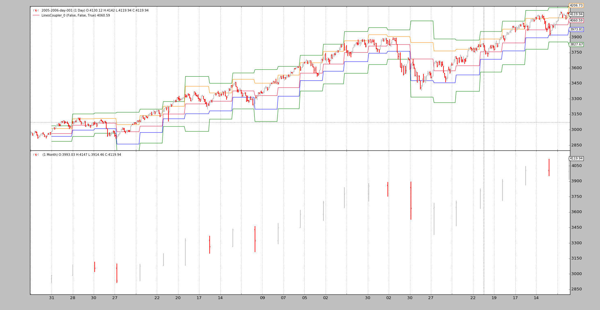

Posted in 2016
Saving Memory
- May 09, 2016
- mementum
Release 1.3.1.92 has reworked and fully implemented the memory saving schemes that were previously in place, although not much touted and less used.

Mixing Timeframes in Indicators
- May 05, 2016
- mementum
Release 1.3.0.92 brings up the possibility to have data (from either data feeds and/or indicators) from different timeframes mixed.

Synchronizing different markets
- Apr 19, 2016
- mementum
The more the usage the more the mix of ideas and unexpected scenarios that
backtrader has to face. And with each new one, a challenge to see if the
platform can live up to the expectations set forth when development started,
flexibility and ease of use were the targets and Python was chosen as the
cornerstone.

Bid-Ask Data to OHLC
- Apr 16, 2016
- mementum
Lately backtrader executed an Escape from OHLC Land by implementing
line overriding, which allows to redefine the entire hierarchy and for example
have data feeds which only feature bid, ask and datetime lines.

Escape from OHLC Land
- Mar 08, 2016
- mementum
One of the key concepts applied during the conception and development of
backtrader was flexibility. The metaprogramming and introspection
capabilities of Python were (and still are) the basis to keep many things
flexible whilst still being able to deliver.
Release 1.2.1.88
- Mar 07, 2016
- mementum
Changing the minor version number from 1 to 2 has taken sometime,
but the deprecation of the old DataResampler and DataReplayer have led
to it.


{kind=link}